CODING AGENTS AS PIXEL WORLD MODELS
traex/DeepSeek-V4.1-Flash · 0076
点击播放 · 原生 RGB 像素
逐轮保存的候选
回放视频、检查图与代码变化。
每份候选均可单独播放。实际图片检查记录在下方工具轨迹中。
候选 01播放与检查图
点击播放 · 原生 RGB 像素

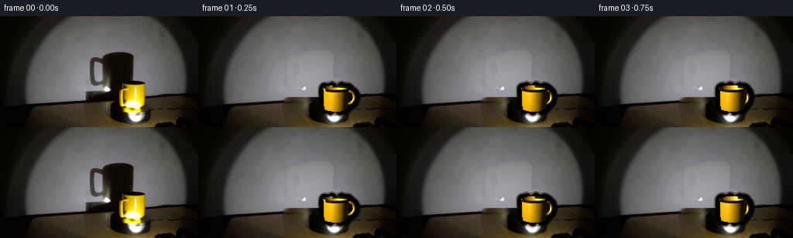
展开代码变化
--- 上一保存版本
+++ 本次保存版本
@@ -0,0 +1,323 @@
+from pathlib import Path
+
+import cv2
+import numpy as np
+from PIL import Image
+
+import artifact_io
+
+
+ROOT = Path(__file__).resolve().parent
+W, H = 256, 144
+N_FRAMES = 20
+SUPERSAMPLE = 3
+
+
+def normalize(v):
+ return v / np.maximum(np.linalg.norm(v, axis=-1, keepdims=True), 1e-9)
+
+
+class Camera:
+ def __init__(self):
+ self.position = np.array([0.0, 0.47, -1.52], dtype=np.float64)
+ target = np.array([0.0, 0.105, 0.02], dtype=np.float64)
+ self.forward = normalize(target - self.position)
+ self.right = normalize(np.cross(self.forward, np.array([0.0, 1.0, 0.0])))
+ self.up = np.cross(self.right, self.forward)
+ self.focal = 300.0
+ self.center = np.array([172.0, 108.0])
+
+ def project(self, points):
+ points = np.asarray(points, dtype=np.float64)
+ relative = points - self.position
+ depth = relative @ self.forward
+ u = self.center[0] + self.focal * (relative @ self.right) / depth
+ v = self.center[1] - self.focal * (relative @ self.up) / depth
+ return np.stack([u, v], axis=-1), depth
+
+
+CAMERA = Camera()
+LIGHT = np.array([0.52, 0.62, -0.62], dtype=np.float64)
+WALL_Z = 0.46
+
+
+def rotation_y(angle):
+ c, s = np.cos(angle), np.sin(angle)
+ return np.array([[c, 0.0, s], [0.0, 1.0, 0.0], [-s, 0.0, c]])
+
+
+def cylinder_mesh(angle):
+ segments = 72
+ levels = 10
+ y0, y1 = 0.047, 0.192
+ x0 = -0.030
+ z0 = -0.005
+ ys = np.linspace(y0, y1, levels)
+ radii = 0.080 + 0.006 * ((ys - y0) / (y1 - y0)) ** 0.65
+ vertices = []
+ for y, radius in zip(ys, radii):
+ for i in range(segments):
+ a = 2.0 * np.pi * i / segments
+ vertices.append([radius * np.cos(a), y, radius * np.sin(a)])
+ vertices = np.asarray(vertices)
+ vertices = vertices @ rotation_y(angle).T
+ vertices += np.array([x0, 0.0, z0])
+
+ faces = []
+ for j in range(levels - 1):
+ for i in range(segments):
+ ni = (i + 1) % segments
+ a = j * segments + i
+ b = j * segments + ni
+ c = (j + 1) * segments + ni
+ d = (j + 1) * segments + i
+ faces.extend([[a, b, c], [a, c, d]])
+
+ return vertices, np.asarray(faces, dtype=np.int32)
+
+
+def torus_mesh(angle):
+ major_segments = 40
+ minor_segments = 12
+ major_radius = 0.043
+ minor_radius = 0.0105
+ center = np.array([-0.112, 0.122, -0.005])
+ vertices = []
+ for i in range(major_segments):
+ u = 2.0 * np.pi * i / major_segments
+ for j in range(minor_segments):
+ v = 2.0 * np.pi * j / minor_segments
+ rr = major_radius + minor_radius * np.cos(v)
+ vertices.append([rr * np.cos(u), rr * np.sin(u), minor_radius * np.sin(v)])
+ vertices = np.asarray(vertices)
+ vertices = vertices @ rotation_y(angle).T
+ vertices += center
+ faces = []
+ for i in range(major_segments):
+ ni = (i + 1) % major_segments
+ for j in range(minor_segments):
+ nj = (j + 1) % minor_segments
+ a = i * minor_segments + j
+ b = ni * minor_segments + j
+ c = ni * minor_segments + nj
+ d = i * minor_segments + nj
+ faces.extend([[a, b, c], [a, c, d]])
+ return vertices, np.asarray(faces, dtype=np.int32)
+
+
+def mug_mesh(angle):
+ outer_v, outer_f = cylinder_mesh(angle)
+ handle_v, handle_f = torus_mesh(angle)
+ handle_f = handle_f + len(outer_v)
+ return np.vstack([outer_v, handle_v]), np.vstack([outer_f, handle_f])
+
+
+def face_normals(vertices, faces):
+ a = vertices[faces[:, 0]]
+ b = vertices[faces[:, 1]]
+ c = vertices[faces[:, 2]]
+ normals = np.cross(b - a, c - a)
+ return normalize(normals)
+
+
+def shade_faces(vertices, faces, angle):
+ centers = vertices[faces].mean(axis=1)
+ normals = face_normals(vertices, faces)
+ centers_world = centers.copy()
+
+ # Correct the torus winding where needed, then orient every face toward the camera.
+ view = normalize(CAMERA.position[None, :] - centers_world)
+ normals[np.sum(normals * view, axis=1) < 0.0] *= -1.0
+
+ light_vec = LIGHT[None, :] - centers_world
+ distance = np.linalg.norm(light_vec, axis=1)
+ light_dir = light_vec / distance[:, None]
+ diffuse = np.clip(np.sum(normals * light_dir, axis=1), 0.0, 1.0)
+ half_vec = normalize(light_dir + view)
+ specular = np.clip(np.sum(normals * half_vec, axis=1), 0.0, 1.0) ** 24
+ falloff = np.clip(1.25 - 0.42 * distance, 0.20, 1.0)
+
+ ambient = np.array([0.095, 0.065, 0.015])
+ albedo = np.array([0.98, 0.72, 0.015])
+ warm_light = np.array([1.0, 0.93, 0.65])
+ color = ambient + albedo[None, :] * (
+ diffuse[:, None] * warm_light[None, :] * 1.75 * falloff[:, None]
+ )
+ color += specular[:, None] * np.array([1.0, 0.97, 0.78])[None, :] * 1.45
+
+ # The inside lip reads as a dark warm opening at this low camera angle.
+ top = centers_world[:, 1] > 0.181
+ inward = np.sum(centers_world[:, [0, 2]] * np.array([np.cos(angle), np.sin(angle)])[None, :], axis=1) < 0.018
+ interior = top & inward
+ color[interior] *= 0.10
+
+ color = color / (1.0 + 0.23 * color)
+ return np.clip(color * 255.0, 0, 255)
+
+
+def rasterize(vertices, faces, colors, width, height, scale):
+ zbuffer = np.full((height, width), np.inf, dtype=np.float32)
+ image = np.zeros((height, width, 3), dtype=np.float32)
+ mask = np.zeros((height, width), dtype=bool)
+ projected, depth = CAMERA.project(vertices)
+ projected = projected * scale
+
+ for face, color in zip(faces, colors):
+ points = projected[face]
+ z = depth[face]
+ min_x = max(0, int(np.floor(points[:, 0].min())))
+ max_x = min(width - 1, int(np.ceil(points[:, 0].max())))
+ min_y = max(0, int(np.floor(points[:, 1].min())))
+ max_y = min(height - 1, int(np.ceil(points[:, 1].max())))
+ if max_x < min_x or max_y < min_y:
+ continue
+
+ x0, y0 = points[0]
+ x1, y1 = points[1]
+ x2, y2 = points[2]
+ denominator = (y1 - y2) * (x0 - x2) + (x2 - x1) * (y0 - y2)
+ if abs(denominator) < 1e-8:
+ continue
+
+ xs = np.arange(min_x, max_x + 1, dtype=np.float32) + 0.5
+ ys = np.arange(min_y, max_y + 1, dtype=np.float32) + 0.5
+ gx, gy = np.meshgrid(xs, ys)
+ w0 = ((y1 - y2) * (gx - x2) + (x2 - x1) * (gy - y2)) / denominator
+ w1 = ((y2 - y0) * (gx - x2) + (x0 - x2) * (gy - y2)) / denominator
+ w2 = 1.0 - w0 - w1
+ inside = (w0 >= -1e-4) & (w1 >= -1e-4) & (w2 >= -1e-4)
+ if not np.any(inside):
+ continue
+
+ local_z = w0 * z[0] + w1 * z[1] + w2 * z[2]
+ zbuf = zbuffer[min_y:max_y + 1, min_x:max_x + 1]
+ update = inside & (local_z < zbuf)
+ if not np.any(update):
+ continue
+ zbuf[update] = local_z[update]
+ image[min_y:max_y + 1, min_x:max_x + 1][update] = color
+ mask[min_y:max_y + 1, min_x:max_x + 1][update] = True
+
+ return image, mask
+
+
+def render_mug(angle):
+ scale = SUPERSAMPLE
+ vertices, faces = mug_mesh(angle)
+ colors = shade_faces(vertices, faces, angle)
+ image, mask = rasterize(vertices, faces, colors, W * scale, H * scale, scale)
+
+ # A very narrow dark contact shadow makes the mug sit on the platform.
+ contact = np.zeros((H * scale, W * scale), dtype=np.uint8)
+ points, _ = CAMERA.project(vertices)
+ points = points * scale
+ for i in range(0, len(points), 9):
+ cv2.circle(contact, tuple(np.round(points[i]).astype(int)), 2, 255, -1)
+ contact = cv2.GaussianBlur(contact, (0, 0), 3.0 * scale)
+
+ return image, mask, contact
+
+
+def wall_shadow(angle):
+ vertices, faces = mug_mesh(angle)
+ directions = vertices - LIGHT[None, :]
+ t = (WALL_Z - LIGHT[2]) / np.maximum(directions[:, 2], 1e-6)
+ points = LIGHT[None, :] + t[:, None] * directions
+ projected, _ = CAMERA.project(points)
+ projected *= SUPERSAMPLE
+
+ shadow = np.zeros((H * SUPERSAMPLE, W * SUPERSAMPLE), dtype=np.uint8)
+ for face in faces:
+ polygon = np.round(projected[face]).astype(np.int32)
+ cv2.fillConvexPoly(shadow, polygon, 255, lineType=cv2.LINE_AA)
+ return cv2.GaussianBlur(shadow, (0, 0), 2.0 * SUPERSAMPLE).astype(np.float32) / 255.0
+
+
+def build_background(frame):
+ y_grid, x_grid = np.mgrid[0:H, 0:W]
+ mug_mask = np.zeros((H, W), dtype=np.uint8)
+ mug_mask[82:126, 151:193] = 255
+ mug_mask[96:109, 151:162] = 255
+ mug_mask = cv2.dilate(mug_mask, np.ones((3, 3), np.uint8), iterations=1)
+
+ gray = cv2.cvtColor(frame, cv2.COLOR_RGB2GRAY)
+ shadow_region = (x_grid >= 112) & (x_grid <= 181) & (y_grid >= 40) & (y_grid <= 108)
+ shadow_mask = (shadow_region & (gray < 91)).astype(np.uint8) * 255
+ shadow_mask = cv2.morphologyEx(shadow_mask, cv2.MORPH_CLOSE, np.ones((5, 5), np.uint8))
+ shadow_mask = cv2.dilate(shadow_mask, np.ones((5, 5), np.uint8), iterations=1)
+ shadow_mask[82:126, 151:193] = 0
+ combined = np.maximum(mug_mask, shadow_mask)
+ combined = cv2.GaussianBlur(combined, (0, 0), 0.65)
+ combined = np.clip(combined.astype(np.float32) / 180.0, 0.0, 1.0)
+
+ # Fit the smooth spotlight wall from unoccluded pixels. This avoids the streaking
+ # that a generic inpainter produces across a large, nearly textureless region.
+ fit_region = (
+ (y_grid >= 8) & (y_grid <= 104) & (x_grid >= 4) & (x_grid <= 252)
+ & (combined < 0.08)
+ )
+ xf = x_grid[fit_region].astype(np.float64) / W
+ yf = y_grid[fit_region].astype(np.float64) / H
+ samples = frame[fit_region].astype(np.float64)
+ terms = np.stack(
+ [
+ np.ones_like(xf), xf, yf, xf * xf, xf * yf, yf * yf,
+ xf ** 3, xf * xf * yf, xf * yf * yf, yf ** 3,
+ ],
+ axis=1,
+ )
+ coefficients = np.linalg.lstsq(terms, samples, rcond=None)[0]
+ xa = x_grid.astype(np.float64) / W
+ ya = y_grid.astype(np.float64) / H
+ all_terms = np.stack(
+ [
+ np.ones_like(xa), xa, ya, xa * xa, xa * ya, ya * ya,
+ xa ** 3, xa * xa * ya, xa * ya * ya, ya ** 3,
+ ],
+ axis=-1,
+ )
+ predicted = all_terms @ coefficients
+
+ inpainted = cv2.inpaint(frame, (combined * 255).astype(np.uint8), 5, cv2.INPAINT_TELEA)
+ background = frame.astype(np.float32).copy()
+ wall_blend = combined * (y_grid < 105)
+ background = background * (1.0 - wall_blend[..., None]) + predicted * wall_blend[..., None]
+ table_blend = combined * (y_grid >= 105)
+ background = background * (1.0 - table_blend[..., None]) + inpainted.astype(np.float32) * table_blend[..., None]
+
+ # Preserve the stationary turntable and foreground exactly.
+ platform_mask = (y_grid >= 123)
+ background[platform_mask] = frame[platform_mask]
+ return np.clip(background, 0, 255)
+
+
+def make_frames():
+ first = np.asarray(Image.open(ROOT / "first_frame.png").convert("RGB"))
+ background = build_background(first)
+ frames = [first.copy()]
+
+ for index in range(1, N_FRAMES):
+ angle = 2.0 * np.pi * index / N_FRAMES
+ mug, mask, contact = render_mug(angle)
+ shadow = wall_shadow(angle)
+
+ # Work at 3x and box-filter down for clean edges at the target resolution.
+ bg = cv2.resize(background, (W * SUPERSAMPLE, H * SUPERSAMPLE), interpolation=cv2.INTER_CUBIC)
+ shadow_strength = 0.89
+ wall_region = np.ones_like(shadow, dtype=np.float32)
+ wall_region[int(105 * SUPERSAMPLE):] = 0.0
+ bg *= 1.0 - shadow_strength * shadow[..., None] * wall_region[..., None]
+
+ # The contact shade is subtle because the platform is already in shadow.
+ bg *= 1.0 - 0.28 * contact[..., None]
+ alpha = mask[..., None].astype(np.float32)
+ composite = bg * (1.0 - alpha) + mug * alpha
+ composite = cv2.resize(composite, (W, H), interpolation=cv2.INTER_AREA)
+ frames.append(np.clip(composite, 0, 255).astype(np.uint8))
+
+ return np.asarray(frames, dtype=np.uint8)
+
+
+if __name__ == "__main__":
+ generated = make_frames()
+ artifact_io.save(generated, ROOT)
候选 02播放与检查图
点击播放 · 原生 RGB 像素

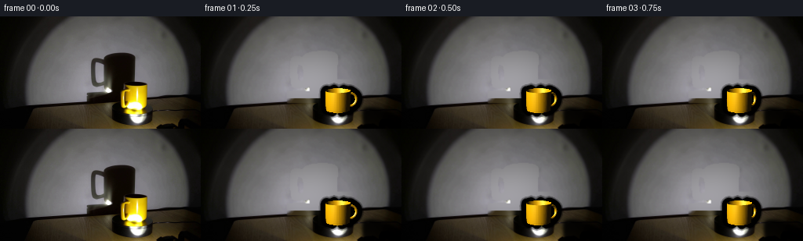
展开代码变化
--- 上一保存版本
+++ 本次保存版本
@@ -49,8 +49,8 @@
def cylinder_mesh(angle):
segments = 72
levels = 10
- y0, y1 = 0.047, 0.192
- x0 = -0.030
+ y0, y1 = 0.047, 0.180
+ x0 = -0.015
z0 = -0.005
ys = np.linspace(y0, y1, levels)
radii = 0.080 + 0.006 * ((ys - y0) / (y1 - y0)) ** 0.65
@@ -81,7 +81,7 @@
minor_segments = 12
major_radius = 0.043
minor_radius = 0.0105
- center = np.array([-0.112, 0.122, -0.005])
+ center = np.array([-0.097, 0.118, -0.005])
vertices = []
for i in range(major_segments):
u = 2.0 * np.pi * i / major_segments
@@ -304,9 +304,7 @@
# Work at 3x and box-filter down for clean edges at the target resolution.
bg = cv2.resize(background, (W * SUPERSAMPLE, H * SUPERSAMPLE), interpolation=cv2.INTER_CUBIC)
shadow_strength = 0.89
- wall_region = np.ones_like(shadow, dtype=np.float32)
- wall_region[int(105 * SUPERSAMPLE):] = 0.0
- bg *= 1.0 - shadow_strength * shadow[..., None] * wall_region[..., None]
+ bg *= 1.0 - shadow_strength * shadow[..., None]
# The contact shade is subtle because the platform is already in shadow.
bg *= 1.0 - 0.28 * contact[..., None]
候选 03播放与检查图
点击播放 · 原生 RGB 像素
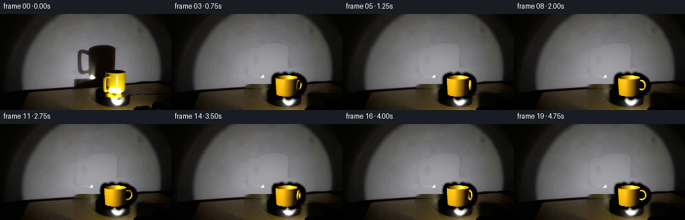
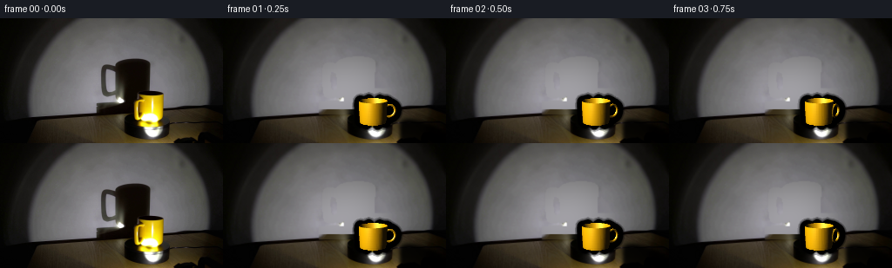
展开代码变化
--- 上一保存版本
+++ 本次保存版本
@@ -50,7 +50,7 @@
segments = 72
levels = 10
y0, y1 = 0.047, 0.180
- x0 = -0.015
+ x0 = -0.002
z0 = -0.005
ys = np.linspace(y0, y1, levels)
radii = 0.080 + 0.006 * ((ys - y0) / (y1 - y0)) ** 0.65
@@ -79,9 +79,9 @@
def torus_mesh(angle):
major_segments = 40
minor_segments = 12
- major_radius = 0.043
- minor_radius = 0.0105
- center = np.array([-0.097, 0.118, -0.005])
+ major_radius = 0.036
+ minor_radius = 0.0090
+ center = np.array([-0.098, 0.118, -0.005])
vertices = []
for i in range(major_segments):
u = 2.0 * np.pi * i / major_segments
可观测工具轨迹
实际执行的命令与返回图片。
命令 1exit 0
/bin/bash -lc "pwd && rg --files -g '"'!*node_modules*'"' -g '"'!*.git*'"' | head -200"
命令 2exit 0
/bin/bash -lc "sed -n '1,240p' prompt.txt"
命令 3exit 0
/bin/bash -lc "sed -n '1,260p' GENERATION_RULES.md"
命令 4exit 0
/bin/bash -lc "find . -maxdepth 2 -type f -printf '%p %s bytes\\n' | sort"
命令 5exit 0
/bin/bash -lc "sed -n '1,260p' artifact_io.py"
命令 6exit 0
/bin/bash -lc "sed -n '1,240p' player_template.html"
命令 7exit 0
/bin/bash -lc "python3 - <<'PY'
from PIL import Image
im=Image.open('first_frame.png')
print(im.mode, im.size)
PY
which ffmpeg || true
python3 - <<'PY'
import importlib.util
for m in ['numpy','scipy','PIL','cv2','skimage','torch','matplotlib']:
print(m, bool(importlib.util.find_spec(m)))
PY"命令 8exit 0
/bin/bash -lc "python3 - <<'PY'
from PIL import Image
im=Image.open('first_frame.png')
im.resize((1024,576),Image.Resampling.NEAREST).save('.tmp/first_big.png')
PY"命令 9exit 0
/bin/bash -lc "python3 - <<'PY'
from PIL import Image
im=Image.open('first_frame.png')
# crop mug/platform enlarged
im.crop((90,35,220,144)).resize((780,654),Image.Resampling.NEAREST).save('.tmp/scene_crop.png')
# color samples
for p in [(171,100),(180,110),(161,119),(184,128),(130,70),(174,124),(150,137),(50,100),(250,30)]: print(p,im.getpixel(p))
PY"命令 10exit 0
/bin/bash -lc "python3 - <<'PY'
import cv2, numpy as np
im=cv2.cvtColor(cv2.imread('first_frame.png'),cv2.COLOR_BGR2RGB)
# yellow score
r,g,b=im[:,:,0].astype(int),im[:,:,1].astype(int),im[:,:,2].astype(int)
mask=((r>55)&(g>45)&(r>b*1.5)&(g>b*1.2)).astype(np.uint8)
# print extents per y around mug
for y in range(42,125,4):
xs=np.where(mask[y])[0]
if len(xs): print(y, xs.min(), xs.max(), len(xs))
cv2.imwrite('.tmp/yellow_mask.png',mask*255)
PY"命令 11exit 0
/bin/bash -lc "python3 - <<'PY'
from PIL import Image
import numpy as np
im=np.array(Image.open('first_frame.png'))
# print key grayscale/color scan lines
for y in [40,50,60,70,80,90,95,100,105,110,115,120,124,127,130,135,140]:
print('y',y)
for x in [80,100,120,140,150,160,170,180,190,200,210,220]:
print(x,tuple(im[y,x]),end='; ')
print()
PY"命令 12exit 0
/bin/bash -lc "python3 - <<'PY'
import cv2,numpy as np
im=cv2.imread('first_frame.png')[:,:,::-1]
# estimate mug top ellipse from edge map in x 145:195 y 83:95
# print raw patches around top/handle
for y in range(82,97):
print(f'{y:3}', ' '.join(f'{im[y,x,0]:3}' for x in range(143,195)))
PY"命令 13exit 0
/bin/bash -lc "python3 - <<'PY'
import cv2,numpy as np
im=cv2.imread('first_frame.png')[:,:,::-1]
for y in range(115,139):
print(f'{y:3}', ' '.join(f'{im[y,x,0]:3}' for x in range(148,213)))
PY"命令 14exit 0
/bin/bash -lc "python3 - <<'PY'
from PIL import Image
im=Image.open('first_frame.png')
im.crop((105,40,200,135)).resize((760,760),Image.Resampling.NEAREST).save('.tmp/shadow_crop.png')
PY"命令 15exit 0
/bin/bash -lc 'python3 generate.py'
命令 16exit 0
/bin/bash -lc "python3 - <<'PY'
from PIL import Image
im=Image.open('frames/03.png')
im.resize((1024,576),Image.Resampling.NEAREST).save('.tmp/f03_big.png')
PY"命令 17exit 0
/bin/bash -lc "python3 - <<'PY'
import numpy as np
from PIL import Image
im=np.array(Image.open('first_frame.png'))
# extents of mug silhouette manually based on dark/yellow from rows
# fit ellipse vertical: top center around x171, y89, bottom body y124, outer radius x149-190
# print shadow dark extents (threshold 85) by rows x 95:190
for y in range(40,111,4):
xs=np.where(im[y,:,0]<85)[0]
xs=xs[(xs>90)&(xs<200)]
if len(xs): print(y,xs.min(),xs.max())
PY"命令 18exit 0
/bin/bash -lc "python3 - <<'PY'
from PIL import Image
im=Image.open('frames/00.png')
print('identical', im.tobytes()==Image.open('first_frame.png').convert('RGB').tobytes())
PY"命令 19exit 0
/bin/bash -lc "python3 - <<'PY'
import numpy as np
from generate import CAMERA
# mug dimensions projected at angle 0
from generate import mug_mesh
v,f=mug_mesh(0)
p,d=CAMERA.project(v)
for name,sel in [('min',v[:,1].argmin()),('top',v[:,1].argmax())]: print(name, v[sel], p[sel])
print('body x/y extents',p[:,0].min(),p[:,0].max(),p[:,1].min(),p[:,1].max())
# actual target approx x 151-190, y89-125
PY"命令 20exit 0
/bin/bash -lc "python3 - <<'PY'
from PIL import Image
im=Image.open('first_frame.png')
im.crop((130,74,215,130)).resize((850,560),Image.Resampling.NEAREST).save('.tmp/mug_target.png')
PY"命令 21exit 0
/bin/bash -lc "python3 - <<'PY'
import cv2,numpy as np
im=cv2.imread('first_frame.png')[:,:,::-1]
# mask actual mug by color + dark body excluding shadow, inspect edge coords
r,g,b=im[:,:,0].astype(int),im[:,:,1].astype(int),im[:,:,2].astype(int)
yellow=(r>60)&(g>40)&(r>1.5*b)&(g>1.2*b)
# body x149..190 y88..126. print row yellow/dark boundaries
for y in range(85,128):
xs=np.where(yellow[y,145:195])[0]+145
if len(xs): print(y,xs.min(),xs.max())
PY"命令 22exit 0
/bin/bash -lc "python3 - <<'PY' import numpy as np from generate import * # make masks from rendered colors compare size for ang in [0,2*np.pi*3/20]: im,m,c=render_mug(ang) m=(m>0).astype(np.uint8) # down m=cv2.resize(m,(W,H),interpolation=cv2.INTER_AREA) ys,xs=np.where(m>.5) print(ang,'bbox',xs.min(),xs.max(),ys.min(),ys.max()) PY"
命令 23exit 0
/bin/bash -lc "python3 - <<'PY'
from pathlib import Path
p=Path('generate.py')
s=p.read_text()
s=s.replace(' for index in range(1, N_FRAMES):\\n angle = 2.0 * np.pi * index / N_FRAMES\\n mug, mask, contact = render_mug(angle)\\n shadow = wall_shadow(angle)\\n\\n # Work at 3x and box-filter down for clean edges at the target resolution.\\n bg = cv2.resize(background, (W * SUPERSAMPLE, H * SUPERSAMPLE), interpolation=cv2.INTER_CUBIC)\\n shadow_strength = 0.89\\n bg *= 1.0 - shadow_strength * shadow[..., None]\\n', ' for index in range(1, N_FRAMES):\\n angle = 2.0 * np.pi * index / N_FRAMES\\n mug, mask, contact = render_mug(angle)\\n shadow = wall_shadow(angle)\\n\\n # Work at 3x and box-filter down for clean edges at the target resolution.\\n bg = cv2.resize(background, (W * SUPERSAMPLE, H * SUPERSAMPLE), interpolation=cv2.INTER_CUBIC)\\n shadow_strength = 0.89\\n bg *= 1.0 - shadow_strength * shadow[..., None]\\n')
p.write_text(s)
PY
python3 -m py_compile generate.py"命令 24exit 0
/bin/bash -lc 'python3 generate.py'
命令 25exit 0
/bin/bash -lc "python3 - <<'PY'
import numpy as np
from generate import *
im,m,c=render_mug(0)
m=(m>0).astype(np.uint8)
m=cv2.resize(m,(W,H),interpolation=cv2.INTER_AREA)
ys,xs=np.where(m>.5)
print('bbox',xs.min(),xs.max(),ys.min(),ys.max())
# identify top and bottom center
for y in [89,90,95,100,105,110,115,120,125]:
xx=np.where(m[y]>.5)[0]
if len(xx):print(y,xx.min(),xx.max())
PY"命令 26exit 0
/bin/bash -lc "python3 - <<'PY'
import numpy as np
from PIL import Image
im=np.array(Image.open('frames/01.png'))
for y in [88,90,95,100,105,110,115,120,125]:
# print colorful extent
r,g,b=im[y,:,0].astype(int),im[y,:,1].astype(int),im[y,:,2].astype(int)
m=(r>40)&(g>30)&(r>b*1.4)&(g>b*1.1)
xs=np.where(m[145:205])[0]+145
print(y,(xs.min(),xs.max()) if len(xs) else None)
PY"命令 27exit 0
/bin/bash -lc "python3 - <<'PY'
from PIL import Image
im=Image.open('frames/01.png')
im.crop((140,75,215,140)).resize((750,650),Image.Resampling.NEAREST).save('.tmp/f01crop.png')
PY"命令 28exit 0
/bin/bash -lc "python3 - <<'PY'
from generate import *
for name,fn in [('body',cylinder_mesh),('mug',mug_mesh)]:
v,f=fn(0)
p,d=CAMERA.project(v)
print(name, p[:,0].min(),p[:,0].max(),p[:,1].min(),p[:,1].max())
PY"命令 29exit 0
/bin/bash -lc "python3 - <<'PY'
from PIL import Image
im=Image.open('first_frame.png')
im.crop((140,78,205,132)).resize((650,540),Image.Resampling.NEAREST).save('.tmp/target_crop2.png')
PY"命令 30exit 0
/bin/bash -lc "python3 - <<'PY'
from pathlib import Path
p=Path('generate.py'); s=p.read_text(); s=s.replace(' x0 = -0.015\\n',' x0 = -0.045\\n'); s=s.replace(' major_radius = 0.043\\n',' major_radius = 0.035\\n'); s=s.replace(' minor_radius = 0.0105\\n',' minor_radius = 0.0090\\n'); s=s.replace(' center = np.array([-0.097, 0.118, -0.005])\\n',' center = np.array([-0.083, 0.118, -0.005])\\n'); p.write_text(s)
PY
python3 - <<'PY'
from generate import *
for name,fn in [('body',cylinder_mesh),('mug',mug_mesh)]:
v,f=fn(0); p,d=CAMERA.project(v); print(name,p[:,0].min(),p[:,0].max(),p[:,1].min(),p[:,1].max())
PY"命令 31exit 0
/bin/bash -lc "python3 - <<'PY'
from pathlib import Path
p=Path('generate.py'); s=p.read_text(); s=s.replace(' x0 = -0.045\\n',' x0 = -0.028\\n'); s=s.replace(' major_radius = 0.035\\n',' major_radius = 0.041\\n'); s=s.replace(' minor_radius = 0.0090\\n',' minor_radius = 0.0095\\n'); s=s.replace(' center = np.array([-0.083, 0.118, -0.005])\\n',' center = np.array([-0.096, 0.118, -0.005])\\n'); p.write_text(s)
PY
python3 - <<'PY'
from generate import *
for name,fn in [('body',cylinder_mesh),('mug',mug_mesh)]:
v,f=fn(0); p,d=CAMERA.project(v); print(name,p[:,0].min(),p[:,0].max(),p[:,1].min(),p[:,1].max())
PY"命令 32exit 0
/bin/bash -lc "python3 - <<'PY'
from pathlib import Path
p=Path('generate.py'); s=p.read_text(); s=s.replace(' x0 = -0.028\\n',' x0 = -0.048\\n'); s=s.replace(' major_radius = 0.041\\n',' major_radius = 0.034\\n'); s=s.replace(' minor_radius = 0.0095\\n',' minor_radius = 0.0085\\n'); s=s.replace(' center = np.array([-0.096, 0.118, -0.005])\\n',' center = np.array([-0.080, 0.118, -0.005])\\n'); p.write_text(s)
PY
python3 - <<'PY'
from generate import *
for name,fn in [('body',cylinder_mesh),('mug',mug_mesh)]:
v,f=fn(0); p,d=CAMERA.project(v); print(name,p[:,0].min(),p[:,0].max(),p[:,1].min(),p[:,1].max())
PY"命令 33exit 0
/bin/bash -lc "python3 - <<'PY'
from pathlib import Path
p=Path('generate.py'); s=p.read_text(); s=s.replace(' x0 = -0.048\\n',' x0 = -0.066\\n'); s=s.replace(' center = np.array([-0.080, 0.118, -0.005])\\n',' center = np.array([-0.098, 0.118, -0.005])\\n'); p.write_text(s)
PY
python3 - <<'PY'
from generate import *
for name,fn in [('body',cylinder_mesh),('mug',mug_mesh)]:
v,f=fn(0); p,d=CAMERA.project(v); print(name,p[:,0].min(),p[:,0].max(),p[:,1].min(),p[:,1].max())
PY"命令 34exit 0
/bin/bash -lc "python3 - <<'PY'
from pathlib import Path
p=Path('generate.py'); s=p.read_text(); s=s.replace(' x0 = -0.066\\n',' x0 = -0.048\\n'); s=s.replace(' center = np.array([-0.098, 0.118, -0.005])\\n',' center = np.array([-0.080, 0.118, -0.005])\\n'); p.write_text(s)
PY
python3 - <<'PY'
from generate import *
for name,fn in [('body',cylinder_mesh),('mug',mug_mesh)]:
v,f=fn(0); p,d=CAMERA.project(v); print(name,p[:,0].min(),p[:,0].max(),p[:,1].min(),p[:,1].max())
PY"命令 35exit 0
/bin/bash -lc "python3 - <<'PY'
from pathlib import Path
p=Path('generate.py'); s=p.read_text(); s=s.replace(' x0 = -0.048\\n',' x0 = -0.028\\n'); s=s.replace(' major_radius = 0.034\\n',' major_radius = 0.038\\n'); s=s.replace(' minor_radius = 0.0085\\n',' minor_radius = 0.0090\\n'); s=s.replace(' center = np.array([-0.080, 0.118, -0.005])\\n',' center = np.array([-0.090, 0.118, -0.005])\\n'); p.write_text(s)
PY
python3 - <<'PY'
from generate import *
for name,fn in [('body',cylinder_mesh),('mug',mug_mesh)]:
v,f=fn(0); p,d=CAMERA.project(v); print(name,p[:,0].min(),p[:,0].max(),p[:,1].min(),p[:,1].max())
PY"命令 36exit 0
/bin/bash -lc "python3 - <<'PY'
from pathlib import Path
p=Path('generate.py'); s=p.read_text(); s=s.replace(' x0 = -0.028\\n',' x0 = 0.042\\n'); p.write_text(s)
PY
python3 - <<'PY'
from generate import *
for name,fn in [('body',cylinder_mesh),('mug',mug_mesh)]:
v,f=fn(0); p,d=CAMERA.project(v); print(name,p[:,0].min(),p[:,0].max(),p[:,1].min(),p[:,1].max())
PY"命令 37exit 0
/bin/bash -lc "python3 - <<'PY'
from pathlib import Path
p=Path('generate.py'); s=p.read_text().replace(' x0 = 0.042\\n',' x0 = -0.059\\n'); p.write_text(s)
PY
python3 - <<'PY'
from generate import *
for name,fn in [('body',cylinder_mesh),('handle',torus_mesh),('mug',mug_mesh)]:
v,f=fn(0); p,d=CAMERA.project(v); print(name,p[:,0].min(),p[:,0].max(),p[:,1].min(),p[:,1].max())
PY"命令 38exit 0
/bin/bash -lc "python3 - <<'PY'
from pathlib import Path
p=Path('generate.py'); s=p.read_text().replace(' x0 = -0.059\\n',' x0 = -0.065\\n'); p.write_text(s)
PY
python3 - <<'PY'
from generate import *
for name,fn in [('body',cylinder_mesh),('handle',torus_mesh),('mug',mug_mesh)]:
v,f=fn(0); p,d=CAMERA.project(v); print(name,p[:,0].min(),p[:,0].max(),p[:,1].min(),p[:,1].max())
PY"命令 39exit 0
/bin/bash -lc "python3 - <<'PY'
from pathlib import Path
p=Path('generate.py'); s=p.read_text(); s=s.replace(' x0 = -0.065\\n',' x0 = 0.025\\n'); s=s.replace(' major_radius = 0.038\\n',' major_radius = 0.036\\n'); s=s.replace(' center = np.array([-0.090, 0.118, -0.005])\\n',' center = np.array([-0.098, 0.118, -0.005])\\n'); p.write_text(s)
PY
python3 - <<'PY'
from generate import *
for name,fn in [('body',cylinder_mesh),('handle',torus_mesh),('mug',mug_mesh)]:
v,f=fn(0); p,d=CAMERA.project(v); print(name,p[:,0].min(),p[:,0].max(),p[:,1].min(),p[:,1].max())
PY"命令 40exit 0
/bin/bash -lc "python3 - <<'PY'
from pathlib import Path
p=Path('generate.py'); s=p.read_text().replace(' x0 = 0.025\\n',' x0 = -0.002\\n'); p.write_text(s)
PY
python3 - <<'PY'
from generate import *
for name,fn in [('body',cylinder_mesh),('handle',torus_mesh),('mug',mug_mesh)]:
v,f=fn(0); p,d=CAMERA.project(v); print(name,p[:,0].min(),p[:,0].max(),p[:,1].min(),p[:,1].max())
PY"命令 41exit 0
/bin/bash -lc "sed -n '1,360p' generate.py"
命令 42exit 0
/bin/bash -lc "python3 - <<'PY' import numpy as np from generate import * for a in [0,.2,.5,1,2,3,4,5,6]: v,f=mug_mesh(a); p,d=CAMERA.project(v) print(a, 'x',round(p[:,0].min(),1),round(p[:,0].max(),1),'y',round(p[:,1].min(),1),round(p[:,1].max(),1)) PY"
命令 43exit 0
/bin/bash -lc 'python3 generate.py'
命令 44exit 0
/bin/bash -lc "sed -n '1,420p' generate.py"
命令 45exit 0
/bin/bash -lc 'ls -lh frames index.html pixels.npz inspection.png transition_check.png 2>/dev/null || true'
命令 46exit 0
/bin/bash -lc 'git status --short'
命令 47exit 0
/bin/bash -lc "python3 - <<'PY'
from PIL import Image,ImageDraw
import glob
files=sorted(glob.glob('frames/*.png'))
out=Image.new('RGB',(5*130,4*100),(20,20,20)); d=ImageDraw.Draw(out)
for i,f in enumerate(files):
im=Image.open(f).crop((130,80,215,140)).resize((130,96),Image.Resampling.NEAREST)
x=(i%5)*130;y=(i//5)*100
out.paste(im,(x,y+4)); d.text((x+3,y+1),f'{i}',fill='white')
out.save('.tmp/mug_sequence.png')
PY"命令 48exit 0
/bin/bash -lc "python3 - <<'PY'
from pathlib import Path
import re
s=Path('generate.py').read_text()
# Output targeted source sections for reasoning
for key in ['def cylinder_mesh','def torus_mesh','def wall_shadow','def build_background','def make_frames']:
i=s.index(key); print('\\n###',key); print(s[i:i+1800 if key not in ('def cylinder_mesh','def torus_mesh') else i+800])
PY"命令 49exit 0
/bin/bash -lc "python3 - <<'PY'
import numpy as np
from generate import *
# inspect shadow masks projected bbox angle 0 and sample target projected mug silhouette points
for a in [0,2*np.pi*3/20,2*np.pi*10/20]:
v,f=mug_mesh(a); p,d=CAMERA.project(v)
print('mug',a,p[:,0].min(),p[:,0].max(),p[:,1].min(),p[:,1].max())
dirs=v-LIGHT[None,:]; t=(WALL_Z-LIGHT[2])/np.maximum(dirs[:,2],1e-6); wp=LIGHT[None,:]+t[:,None]*dirs; pp,dd=CAMERA.project(wp)
print('shadow',pp[:,0].min(),pp[:,0].max(),pp[:,1].min(),pp[:,1].max())
PY"命令 50exit 0
/bin/bash -lc "python3 - <<'PY'
from PIL import Image
im=Image.open('frames/00.png')
# crop inpaint candidate not saved; reconstruct background and save
from generate import build_background
import numpy as np
bg=build_background(np.asarray(im)).astype(np.uint8)
Image.fromarray(bg).save('.tmp/background.png')
Image.fromarray(bg).resize((1024,576),Image.Resampling.NEAREST).save('.tmp/background_big.png')
PY"命令 51exit 0
/bin/bash -lc "python3 - <<'PY'
import numpy as np
from generate import *
from PIL import Image
# compare projection for body at angle 0 to target expected extents; create overlay
im=np.asarray(Image.open('first_frame.png'))
v,f=mug_mesh(0); p,d=CAMERA.project(v)
import cv2
ov=im.copy()
for q in p:
cv2.circle(ov,(int(round(q[0])),int(round(q[1]))),1,(255,0,0),-1)
Image.fromarray(ov).crop((140,78,205,132)).resize((650,540),Image.Resampling.NEAREST).save('.tmp/overlay0.png')
PY"命令 52exit 0
/bin/bash -lc "python3 - <<'PY'
from PIL import Image
import numpy as np
im=np.array(Image.open('first_frame.png'))
# sample original at top center x171 y89, then top row extents; identify actual top/body shape manually
for y in [87,88,89,90,91,92,93,94,95,96,97,98,99,100,101,102,103,104,105,106,107,108,109,110,111,112,113,114,115,116,117,118,119,120,121,122,123,124,125,126]:
r,g,b=im[y,:,0].astype(int),im[y,:,1].astype(int),im[y,:,2].astype(int)
m=(r>50)&(g>35)&(r>1.45*b)&(g>1.15*b)
xs=np.where(m[145:195])[0]+145
print(y,(xs.min(),xs.max(),len(xs)) if len(xs) else None)
PY"命令 53exit 0
/bin/bash -lc "python3 - <<'PY' import numpy as np from generate import * # camera solve for x0 such that top center body x around171 and radius map around 16.5 pixels for x0 in [-.012,-.01,-.008,-.006,-.004,-.002,0,.002]: v,f=cylinder_mesh(0); v[:,0]+=x0 p,d=CAMERA.project(v) print(x0, p[:,0].min(),p[:,0].max(),(p[:,0].min()+p[:,0].max())/2) PY"
命令 54exit 0
/bin/bash -lc "python3 - <<'PY' import numpy as np from generate import * for x0 in [0.002,0.005,0.01,0.015,0.02]: v,f=cylinder_mesh(0); v[:,0]+=x0 p,d=CAMERA.project(v) print(x0, p[:,0].min(),p[:,0].max(),p[:,1].min(),p[:,1].max()) PY"
命令 55exit 0
/bin/bash -lc "python3 - <<'PY'
from pathlib import Path
p=Path('generate.py'); s=p.read_text().replace(' x0 = -0.002\\n',' x0 = 0.010\\n'); p.write_text(s)
PY
python3 - <<'PY'
from generate import *
v,f=mug_mesh(0); p,d=CAMERA.project(v); print(p[:,0].min(),p[:,0].max(),p[:,1].min(),p[:,1].max())
PY"命令 56exit 0
/bin/bash -lc "python3 - <<'PY'
from pathlib import Path
p=Path('generate.py'); s=p.read_text().replace(' x0 = 0.010\\n',' x0 = 0.006\\n'); p.write_text(s)
PY
python3 - <<'PY'
from generate import *
v,f=mug_mesh(0); p,d=CAMERA.project(v); print(p[:,0].min(),p[:,0].max(),p[:,1].min(),p[:,1].max())
PY"命令 57exit 0
/bin/bash -lc "python3 - <<'PY'
from pathlib import Path
p=Path('generate.py'); s=p.read_text().replace(' x0 = 0.006\\n',' x0 = 0.000\\n'); p.write_text(s)
PY
python3 - <<'PY'
from generate import *
for a in [0,1,2,3,4,5,6]:
v,f=mug_mesh(a); p,d=CAMERA.project(v); print(a, p[:,0].min(),p[:,0].max())
PY"命令 58exit 0
/bin/bash -lc "python3 - <<'PY'
import numpy as np
from generate import *
# print top/bottom for 0 x=0
v,f=cylinder_mesh(0); p,d=CAMERA.project(v)
print(p[:,0].min(),p[:,0].max(),p[:,1].min(),p[:,1].max())
# top and bottom center projected
print('center top',CAMERA.project(np.array([[0,.18,0]]))[0])
print('center bottom',CAMERA.project(np.array([[0,.047,0]]))[0])
PY"命令 59exit 0
/bin/bash -lc "python3 - <<'PY'
from pathlib import Path
p=Path('generate.py'); s=p.read_text().replace(' x0 = 0.000\\n',' x0 = -0.012\\n'); p.write_text(s)
PY
python3 - <<'PY'
from generate import *
v,f=mug_mesh(0); p,d=CAMERA.project(v); print(p[:,0].min(),p[:,0].max(),p[:,1].min(),p[:,1].max())
PY"命令 60exit 0
/bin/bash -lc "python3 - <<'PY'
import numpy as np
from PIL import Image
im=np.array(Image.open('first_frame.png'))
# print grayscale contours / local extrema for top edge mug x160-190
for y in range(82,98):
print(y, [int(im[y,x,0]) for x in range(155,192)])
PY"命令 61exit 0
/bin/bash -lc "python3 - <<'PY'
import cv2,numpy as np
from PIL import Image
im=np.array(Image.open('first_frame.png'))
# fit ellipse to outer rim points manually select high brightness top curve where background >100 and inside y88-98 x158-188
pts=[]
for y in range(87,99):
for x in range(155,191):
if im[y,x,0]>100 and y<96 and x>157 and x<190:
# outside top rim points not body; inspect image values harder
pts.append([x,y])
print(len(pts))
PY"命令 62exit 0
/bin/bash -lc "python3 - <<'PY' import numpy as np from generate import * # Check actual rasterized bbox and color at target after x shift for a in [0,.3,1.0,3.0]: im,m,c=render_mug(a); m=(m>0).astype(np.uint8); m=cv2.resize(m,(W,H),interpolation=cv2.INTER_AREA) ys,xs=np.where(m>.5); print(a,xs.min(),xs.max(),ys.min(),ys.max()) PY"
视觉工具实际返回图片 1
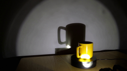
视觉工具实际返回图片 2
视觉工具实际返回图片 3
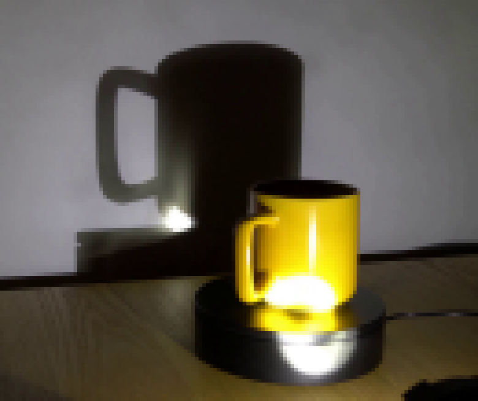
视觉工具实际返回图片 4
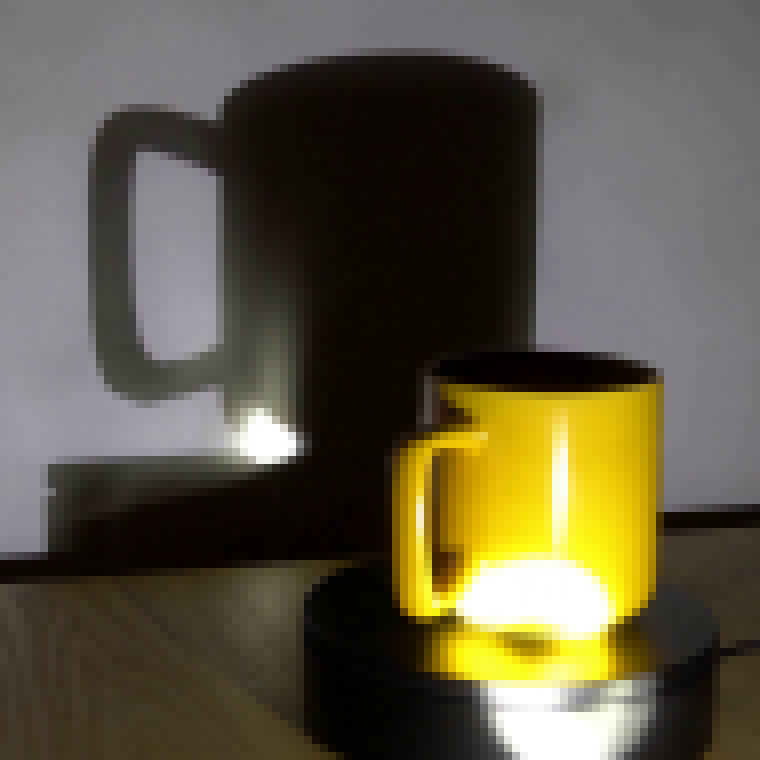
视觉工具实际返回图片 5
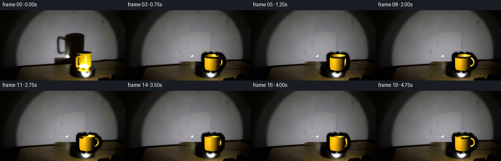
视觉工具实际返回图片 6
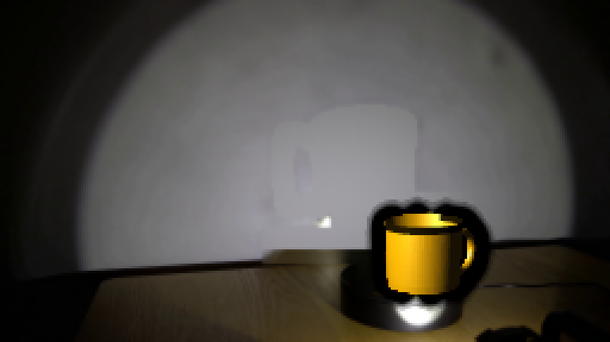
视觉工具实际返回图片 7
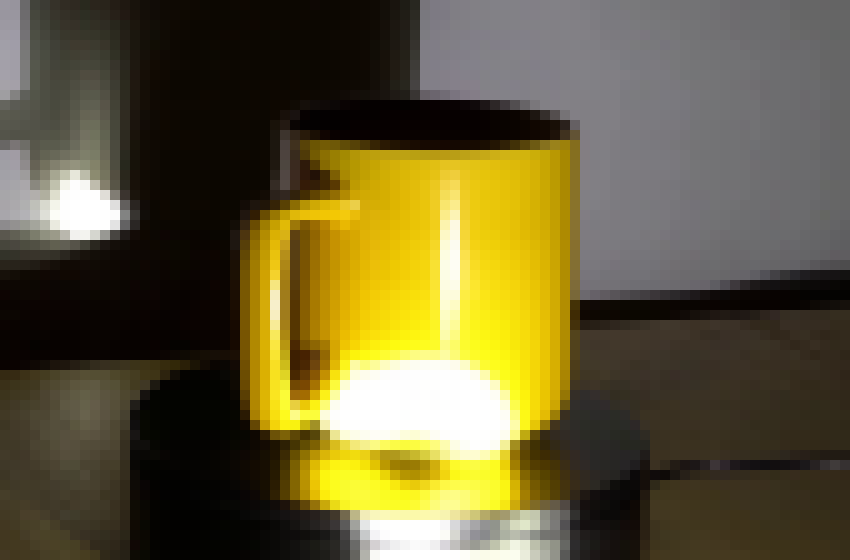
视觉工具实际返回图片 8
视觉工具实际返回图片 9
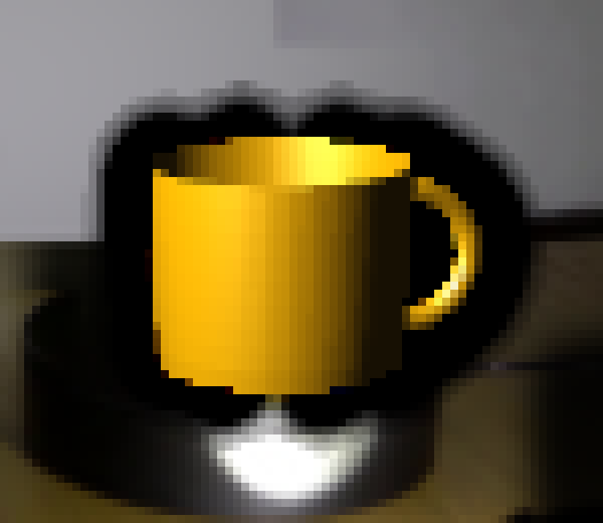
视觉工具实际返回图片 10
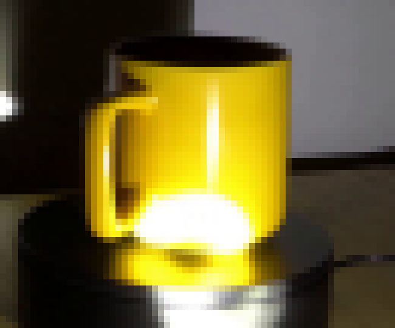
视觉工具实际返回图片 11

视觉工具实际返回图片 12
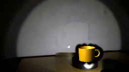
视觉工具实际返回图片 13
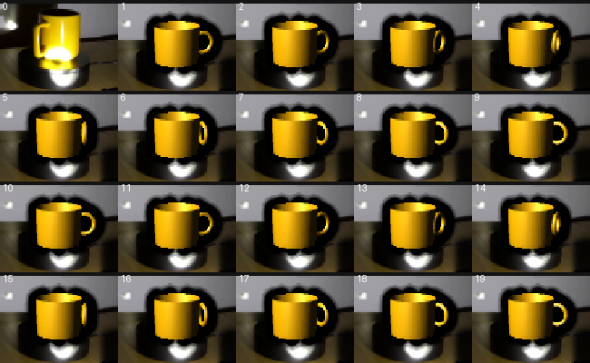
视觉工具实际返回图片 14
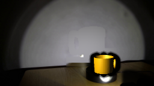
视觉工具实际返回图片 15
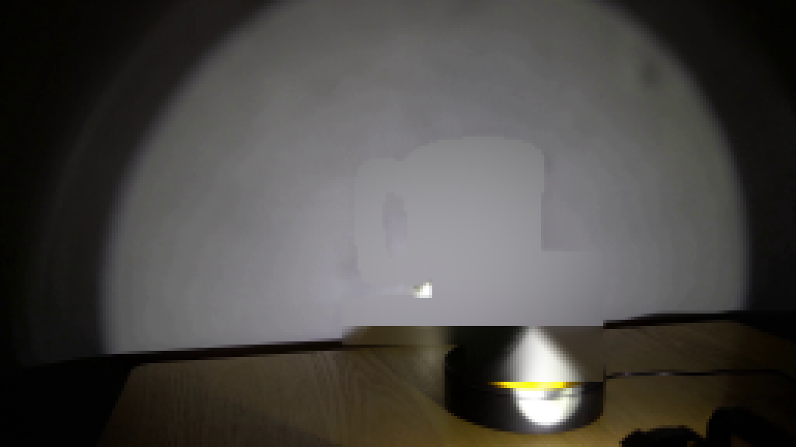
视觉工具实际返回图片 16
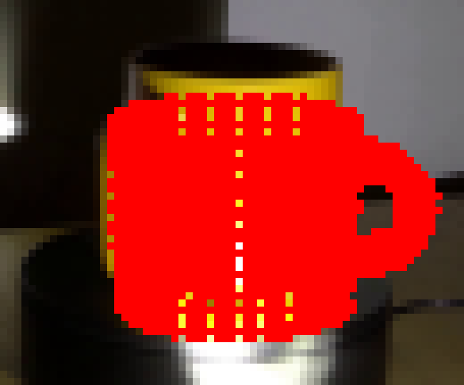
保存候选 3 份；完成命令 62 次；可验证图片返回 16 张。原始 API 响应与完整日志保留在本地。